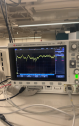
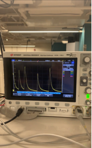
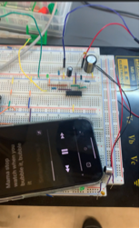
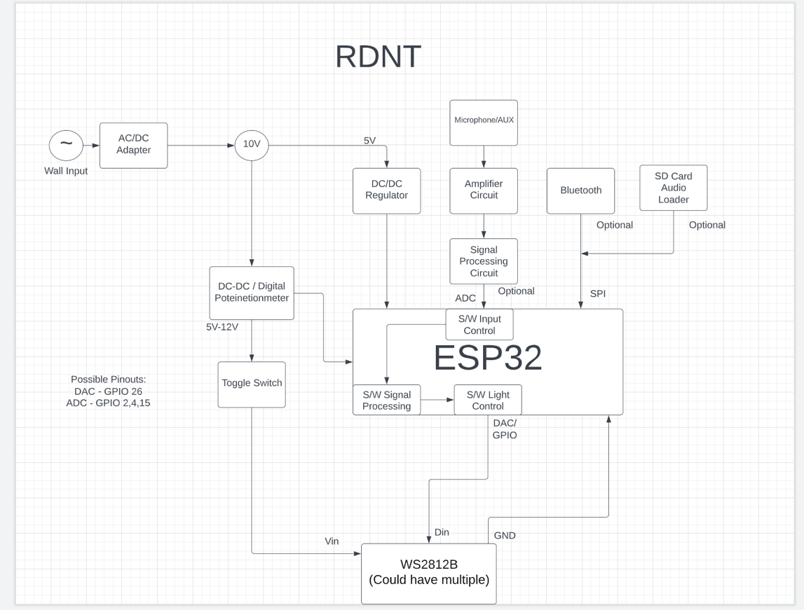
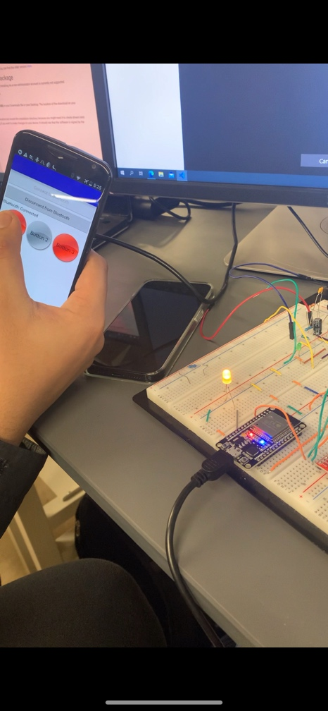

WEEK 2:
Date: 01/20/2023
Total Hours: 12
Description of Design Efforts:
• What did the student work on?
• How did the student work on it? (Tools? Programs? Test rig? Etc.)
• What was the result, and how does this affect the project?
• What did the student learn?
• What are the next steps that must be taken?
This week, I worked on several initial functions for the project. This includes setting up the hardware interface, generating ideas for the functional specifications, prototyping these ideas, and starting the initial discussion of the final design concept.
We decided as a team to use ESP32 for our microcontroller. I have used it in ECE40862 and presented the benefits of using this microcontroller to our teammates. The major selling point was that we had used it before, and it was readily available in the lab. Moreover, the in-built Bluetooth module was useful for our project, where we may require high-speed wireless data transfer. We acquired the ESP32, and I set up the interfacing using PlatformIO on VSCode. This made prototyping easier as PlatformIO offers control through both Arduino and Espressif IoT Frameworks. This played as a major advantage for us, as we were able to focus on quickly prototyping and testing our circuitry. We plan on continuing to use this interface.

I contributed to building and testing the first prototype of our microphone circuitry with Graeme. This was a big success as it maps out to a potential PSSC and our testing yielded promising results. The figure above shows that the microphone can identify sound nearby and recognize certain beats and frequencies. However, we also identified major impact of noise, and plan on adding a mix of software and hardware filtering to ensure that the microphone can distinguish different frequencies within audio input. While the team was focused on conducting software filtering, I demonstrated that some level of hardware filtering, and focusing on software smoothening, would be beneficial to reduce the latency of data transfer, but we must also ensure there is not significant data loss.

I also focused on several team tasks such as team discussions and the development of a top-level system flowchart with Kahaan. This allowed us to rethink our PSSCs as per the guidelines by the instructor and TA during our last MANLAB. We are able to map out the entire project and discuss specific details based on this flowchart. We learned that there are several (possibly 100+) PSSCs that can be developed, but we must focus on choosing the right 5 specifications that would distinguish our device from similar product which can be developed in the timeframe of our project. Kahaan and I also worked on prototyping bluetooth connection between our microcontroller and a phone app. Secifically, I helped him establish a connection with the microcontroller through PlatformIO. While this is just a basic test, we will attempt to send data packets for our next prototype.
Throughout this week, I established a fail-faster attitude among our group. I learned that the key to move forward is to rapidly prototype and learn from the results. There are several technical topics where I had to revisit material from previous classes, such as op-amps for the microphone filter, Fourier transformation for signal processing, and creating an aux-in connection. I believe the key takeaway for me was to collaborate with my teammates to quickly learn and prototype. I hope to begin development of the final schematic and get started with the PCB design by Week 4.